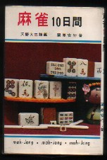

ある古書目録で次のような記述を見つけた。
「 麻雀１０間 」 天野大三推薦 ・ 栗原安行著 \800−
麻雀１０間？、こんな名前の本は聞いたことがない。「１０間」ってどういう意味だ？。ひょっとしたら「麻雀１０問」の間違いか？
しかし「麻雀１０問」にしても聞いたことがない。
栗原安行氏は共著もふくめて100冊近くもの麻雀書を出版している。すべて入手した積もりであったが、未入手、未発見の本があったのか！。そう思って速攻で注文した。
やがて郵送されて来たのは、「麻雀１０間」でも無ければ「麻雀１０問」でもなかった。おひぃ！、この本なら何冊も持ってるぞい。。。

あきらかな書店のケアレスミスであったが、ま、仕方ないかと思って代金は払った（送り返すのも面倒だし、送り返せば郵送費も数百円かかる）。しかしこの本を見て、ちと考えることがあった。
この本の出版価格は280円。新書版で280円はいまの感覚から云えば廉価であるが、発行年代（昭和44年９月）では普通の価格。
昨日出版された本でも、今日、古書店の店先に並べば古本である。そして古本と古書は、表現の違いであって種類の違いではない。しかしこちらで述べたように、「古本」というと何んとなく一般的。そして定価より廉価な本というイメージがある。しかし「古書」となると、古本より時代がかっており、定価より高価な本というイメージがある。
そして現時点で麻雀古書と言えるのは、昭和40年がボーダーライン。それ以前に出版された本なら、「古書」と読んでさしつかえない。それ以降に出版されたものは、まだ「古本」の世界だ。
そしてこの本は、昭和44年９月の出版。ボーダーラインをちょいと越えている。つまり「麻雀10日間」は、σ(-_-)の感覚では古書より古本。となれば店によっては百円のジャンク本扱いになっていても不思議ではない。それがこの本の販売価格は定価の３倍。
古い物である以上、価格の付け方は店によって異なるのは当然であるが、σ(-_-)としては麻雀本の古本と古書のボーダーラインが、10年さがって昭和50年くらいになってきたのかいな、と思った次第だ。しかしそうなったからと云って、まさかσ(-_-)のせいじゃないよな....
|